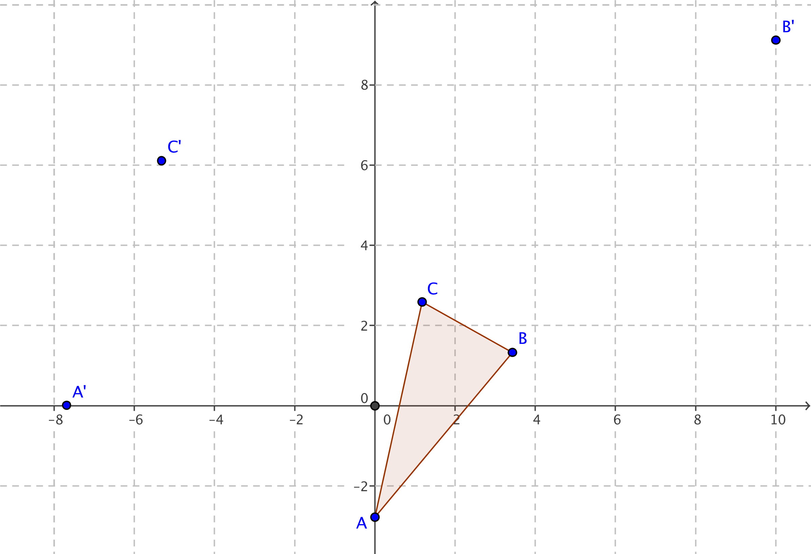
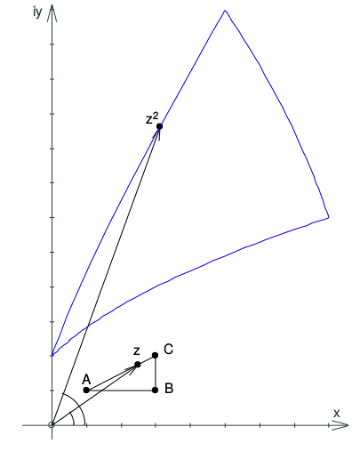

Aufgabe II.5
Wie bildet die Funktion $f(z)=z^2$ das Versuchsdreieck ab? (Die Ecken $A$, $B$, $C$ wurden bereits in $A'$, $B'$ bzw. $C'$ transformiert.) Können Sie Ihre Beobachtungen begründen?

- Was passiert mit Betrag und Argument bei $z^2$?
- Vergleichen Sie Punkte innerhalb und ausserhalb des Einheitskreises.
- Beachten Sie: Die Transformation ist ortsabhängig!
Schritt 1: Wirkung auf einzelne Punkte Für $z = r \cdot \text{cis}(\varphi)$ gilt: \[z^2 = r^2 \cdot \text{cis}(2\varphi)\]
Das bedeutet:
- Der Betrag wird quadriert: $|z^2| = |z|^2$
- Das Argument wird verdoppelt: $\arg(z^2) = 2\arg(z)$
Schritt 2: Abhängigkeit vom Ort
- Punkte mit $|z| < 1$: werden zum Ursprung hingezogen ($|z|^2 < |z|$)
- Punkte mit $|z| = 1$: bleiben auf dem Einheitskreis ($|z|^2 = 1$)
- Punkte mit $|z| > 1$: werden vom Ursprung weggestreckt ($|z|^2 > |z|$)

Schritt 3: Verformung der Figur Im Gegensatz zu linearen Funktionen:
- Geraden werden i.A. zu Parabeln oder anderen Kurven
- Winkel bleiben nicht erhalten
- Die Form hängt von der Lage ab
Begründung der Beobachtungen:
Die ortsabhängige Wirkung entsteht, weil:
- Die Streckung mit dem Faktor $|z|$ variiert
- Die Drehung um den Winkel $\arg(z)$ ebenfalls ortsabhängig ist
- Dadurch wird die Figur nichtlinear verzerrt
Ein Dreieck innerhalb des Einheitskreises wird also «zusammengedrückt» und dabei verdreht, während ein Dreieck ausserhalb «auseinandergezogen» wird. Die Seiten werden dabei zu Kurven zweiten Grades.
Im Video: Etappe 4 · Quadratische komplexe Funktionen bei 4:05